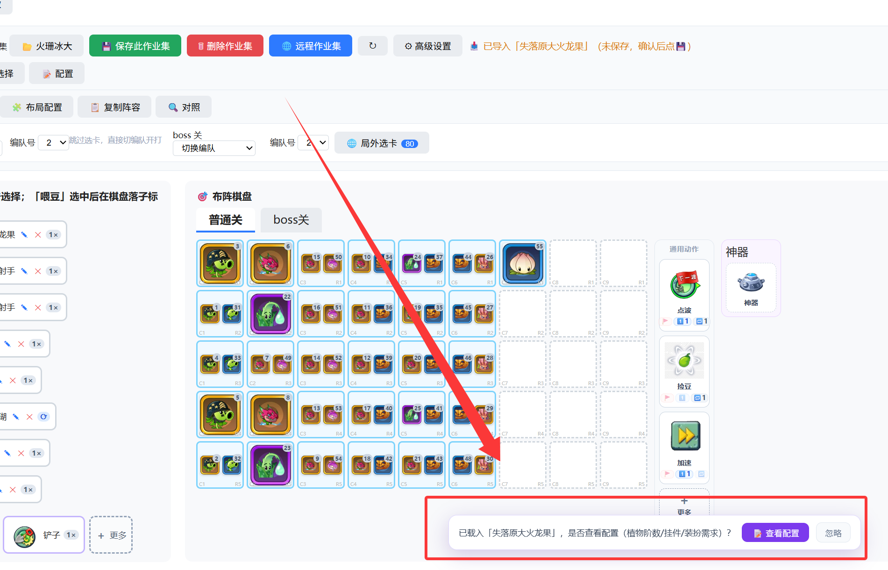
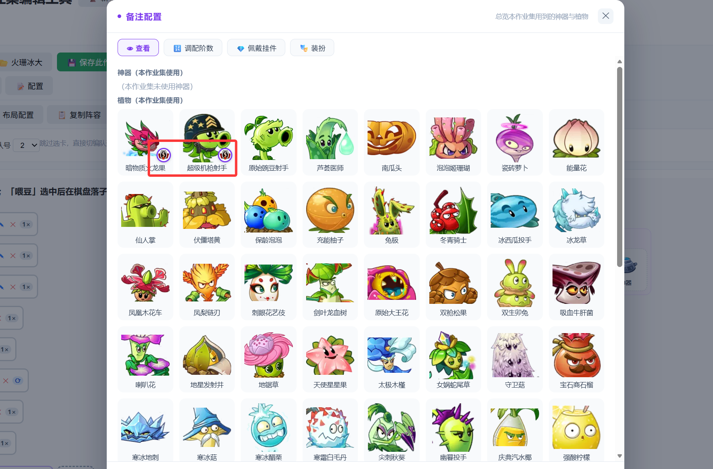
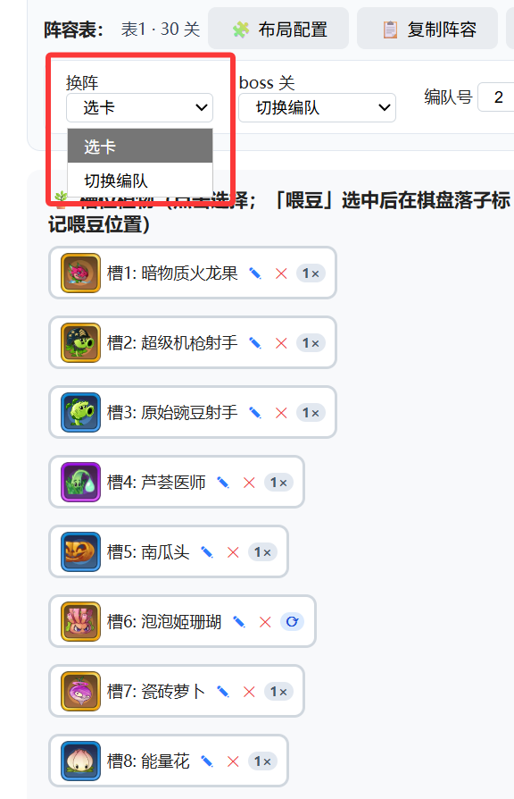
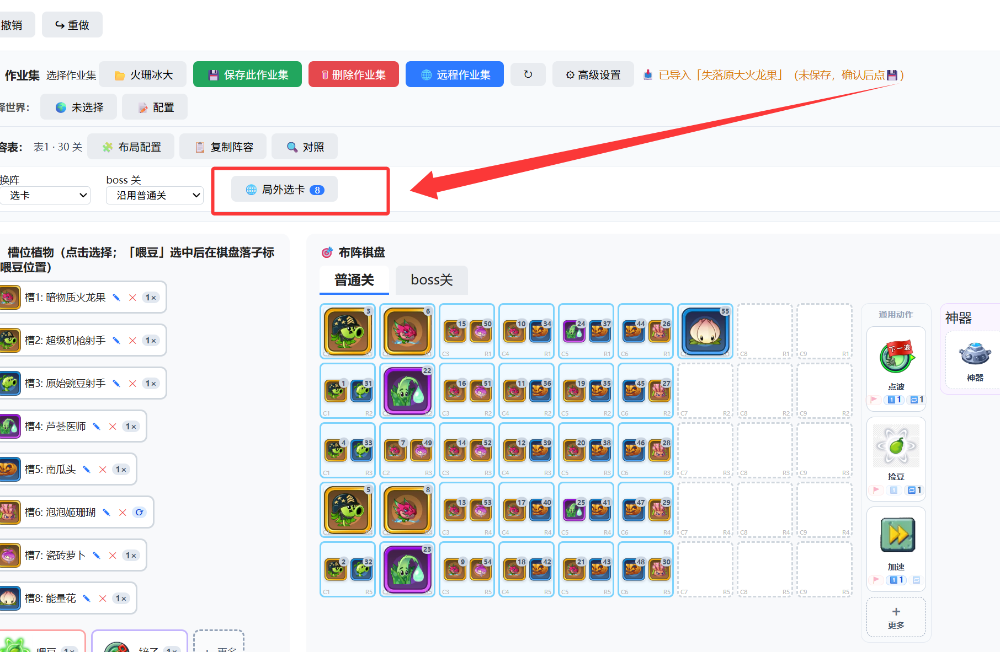
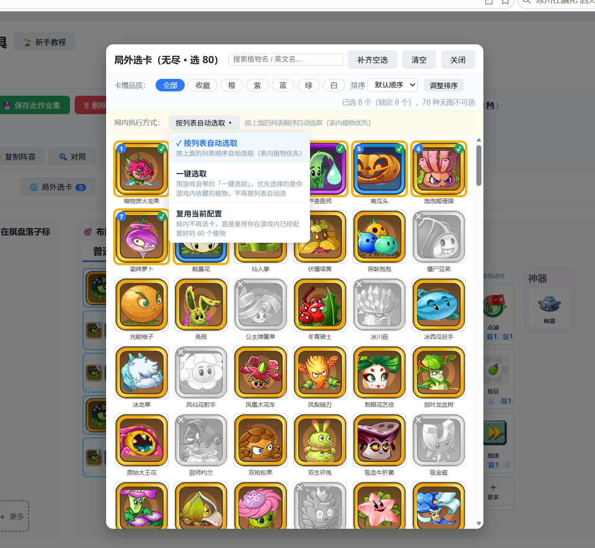
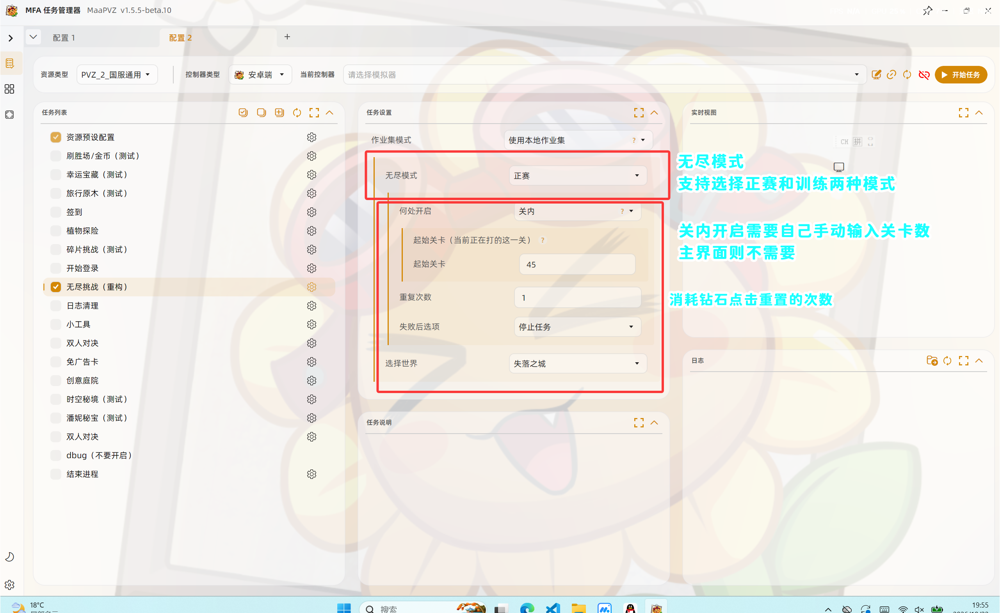

# 🏰 无尽作业集使用教程
📖 预计阅读时间: 5 分钟ℹ️ 本页是使用教程
本页教你如何使用别人分享的作业集。如果你想自己制作 / 编辑作业集，请查看：👉 无尽作业集编辑教程 →
🌐 远程作业站
没有作业集？去远程作业站逛逛，挑选别人分享好的作业集：
# 1. 打开作业集工具
点击「编辑作业集」并运行一次，即可打开 html 作业集工具。
🔴 非常重要
一定要换成「编辑作业集」打开一次！只有运行过一次，才能打开作业集工具进行后续操作。

▲ 点击「编辑作业集」并运行一次
# 2. 导入作业集所需操作
导入作业集后你需要知道的……
🔴 非常重要
导入作业集之后，必须先保存一次作业集才可以使用，否则配置不会生效。

▲ 导入作业集之后，保存一次才可以使用
💡 第一次导入时的提示
第一次导入作业集后，会出现提示，让你参考这个作业集需要的配置，用于核对自己的账户。

▲ 第一次导入后会出现提示，点击后可查看该作业集需要的配置

▲ 配置示例：如图所示，该作业集有两个需要五阶的植物——核对你的账户是否满足
保存作业集后，在 MaaPvz 中将任务选项切换为「使用本地作业集」，该选项会使用网页端选择并最新保存的作业集。
# 3. 切换阵容
切换阵容默认为选卡，你可以改成切换编队。

▲ 可以切换自己配置好的编队
# 4. 局外选卡
局外选卡就是无尽第一个开始的时候让你选择的那 80 个植物：

▲ 局外选卡入口
- 你可以自己在这里设置 80 个植物（就是选的慢）。
- 也可以选择另外两种模式：将会分别点击 一键选卡 和 直接点击确定。
🔴 非常重要
一定要选择 80 个，或者选择下面两个配置（一键选卡 / 复用当前配置）才能正常运行！

▲ 会按照顺序来选择你这里的卡组，也可以切换一键选取和复用当前配置（就是直接点确定）
# 5. Maa 的 option 设置
作业集任务在 MaaPvz 中的 option 设置，一图流看懂：

▲ option 配置一图流